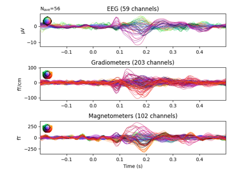
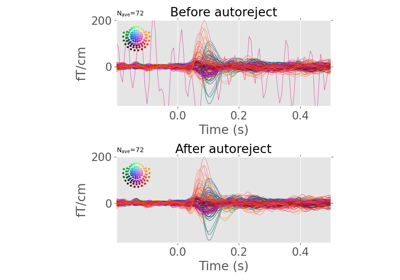
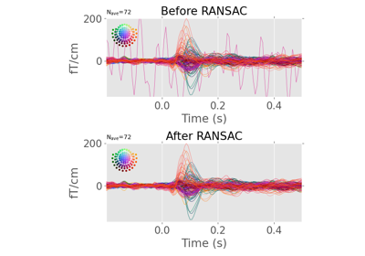
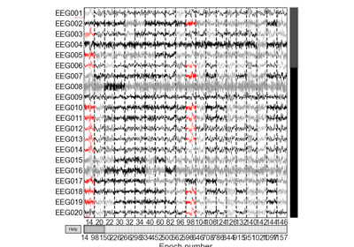

Examples Gallery#
This section of the documentation is learning-oriented and shows off some of
the basic functionality of autoreject.

Find global rejection threshold
Find global rejection threshold


Automatically repair epochs


Detect bad sensors using RANSAC
Detect bad sensors using RANSAC


Visualize bad sensors per trial
Visualize bad sensors per trial